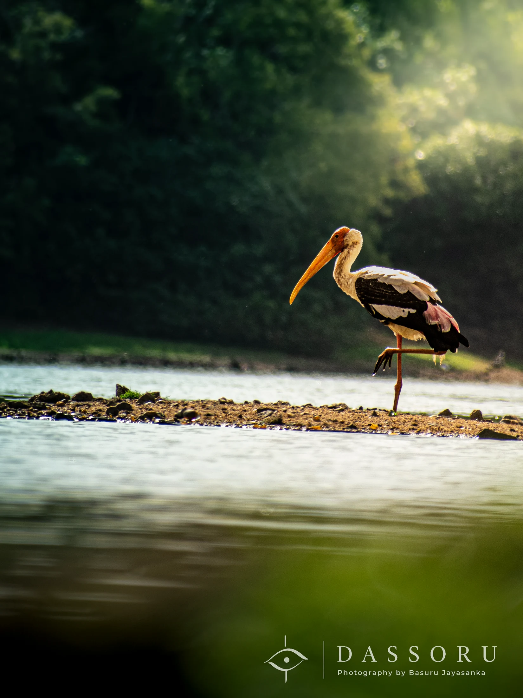

WILDLIFE
Patience
Sometimes, all we can do is wait.
It was a hot day near Trincomalee, Sri Lanka.
A nearby reservoir had dried up significantly, leaving only shallow pools where fish were trapped. Many birds had gathered, searching for food.
Among them was this pelican.
Unlike other birds that were moving restlessly, this one stood completely still beside the mud and shallow water, waiting quietly for the right moment.
It did not rush. It did not chase every small movement.
It understood that patience would eventually bring the reward.
Watching it made me reflect on my own life.
Sometimes we try too hard to force things to happen immediately, forgetting that waiting patiently for the right time is also a form of wisdom.
Nature has many ways of teaching us — if we take the time to notice.
- Location
- Reservoir near Trincomalee, Sri Lanka
- Date
- July 2024
- Photographer
- Basuru Jayasanka
- Category
- Wildlife
For commercial use, publication, prints or image licensing, please contact Basuru directly via email or WhatsApp.